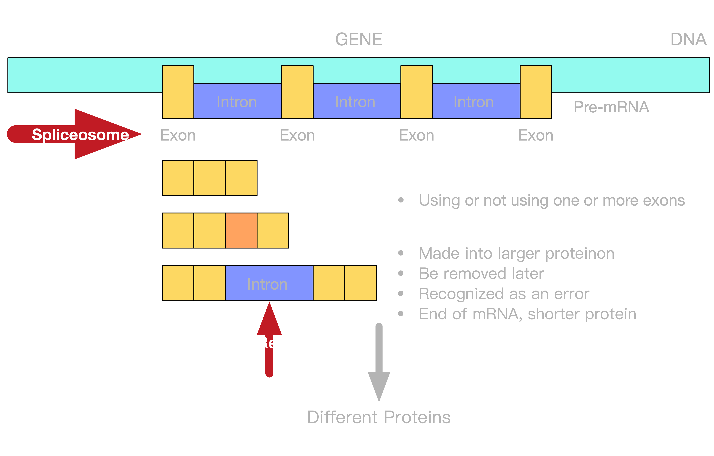

Spliceosome / Intron Retention

What is SLE
Autoimmune Disease
Destroy Healthy Tissues
Lupus Overlap Disease
Exact Cause Unclear
Hard to Diagnose
In US, 16,000 New Case/Year, 1.5M
More than 5M worldwide
SLEDAI
Systemic Lupus Erythematosus Disease Activity Index
Calculated by Showing Clinical Phenomena
Stratifies severity of SLE
0 < SLEDA < 4, Inactive